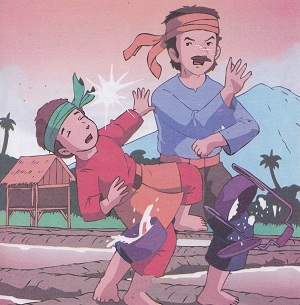

Asal Mula Danau Toba
( Cerita Rakyat Sumatera Utara)
Dahulu kala, di pedalaman Sumatera Utara ada seorang petani bernama Toba yang menyendiri di sebuah lembah yang landai dan subur. Petani itu mengerjakan sawah dan ladang untuk keperluan hidupnya. Selain mengerjakan ladangnya, kadang-kadang lelaki itu pergi memancing ikan ke sungai yang berada tak jauh dari rumahnya. Ikan hasil pancingannya dia masak untuk dimakan.
Pada suatu sore, setelah pulang dari ladang Toba langsung pergi ke sungai untuk memancing. Tidak berapa lama kemudian tiba-tiba pancing itu disambar ikan yang langsung menarik pancing itu jauh ke tengah sungai. Ketika pancing itu ditariknya tampaklah seekor ikan besar tergantung dan meggelepar – gelepar diujung tali pancingnya. Dia tersenyum gembira mata pancingnya dia lepas dari mulut ikan itu. Hari sudah mulai senja, dia pun meninggalkan sungai untuk pulang ke rumahnya.
Setibanya dirumah, Toba langsung membawa ikan besar hasil pancingannya itu ke dapur. Ketika dia hendak menyalakan api untuk memasak ikan itu, ternyata kayu bakar didapur rumahnya sudah habis. Dia pun segera keluar untuk mencari kayu bakar. Akan tetapi ketika dia kembali kerumah, dia tidak menemukan ikan besar itu. Tapi, alangkah terkejutnya dia melihat seorang perempuan cantik yang duduk dikursi. Sambil menunggu nasi masak, perempuan itu menceritakan bahwa dia adalah penjelmaan ikan besar yang tadi didapat ketika memancing disungai.
Setelah beberapa minggu perempuan cantik itu tinggal serumah bersamanya, pada suatu hari toba melamar perempuan tersebut untuk menjadi istrinya. Perempuan itu bersedia menerima lamarannya dengan syarat Toba harus bersumpah bahwa seumur hidupnya dia tidak akan mengungkit asal usul istrinya yang menjelma dari ikan. Toba pun menyanggupi persyaratannya, kemudian menikahlah Toba dengan perempuan cantik itu.
Setahun kemudian mereka dikaruniai seorang anak laki-laki yang mereka beri nama Samosir. Anak itu sangat dimanjakan ibunya yang mengakibatkan anak itu bersifat kurang baik dan pemalas. Setelah cukup besar, anak itu anak itu disuruh ibunya mengantar nasi untuk ayahnya yang bekerja diladang. Namun, dia menolakny sehingga terpaksalah ibunya yang mengantarkan nasi ke ladang.
Suatu hari, anak itu disuruh ibunya lagi mengantarkan nasi ke ladang untuk ayahnya. Mulanya dia menolak. Akan tetapi, karena terus dipaksa ibunya, dengan kesal pergilah dia mengantarkan nasi itu. Di tengah jalan, sebagian besar nasi dan lauknya dia makan. Setibanya di ladang, sisa nasi yang hanya tinggal sedikit dia berikan kepada ayahnya. Saat menerimanya, Pak Toba sudah merasa sangat lapar karena nasinya terlambat sekali diantarkan. Oleh karena itu, Pak Toba menjadi sangat marah ketika melihat nasi yang diberikan kepadanya adalah sia-sia. Kesabaran Toba jadi hilang dan dia pukuli anaknya sambil mengatakan “Anak yang tak bisa diajar. Tidak tahu diuntung. Dasar keturunan perempuan ikan!”.
Sambil menagis, anak itu berlari pulang dan menemui ibunya dirumah. Kepada ibunya dia adukan bahwa dia dipukuli ayahnya. Semua kata-kata cercaan ayahnya kepadanya dia ceritakan pula. Mendengar cerita anak itu, si ibu sedih sekali, terutama karena suaminya sudah melanggar sumpahnya dengan kata-kata cercaan yang diucapkan kepada anaknya itu.
Si ibu menyuruh anaknya agar segera pergi mendaki bukit yang terletak tidak jauh dari rumah merekan dan memanjat pohon yang tertinggi yang terdapat dipuncak bukit itu. Tanpa betanya lagi, si anak segera melakukan perintah ibunya itu. Dia berlari-lari menuju bukit tersebut dan mendakinya.
Ketika tampak oleh si ibu anaknya sudah hampir sampai ke puncak pohon kayu yang dipanjatnya di atas bukit, dia pun berlari menuju sungai yang tidak jauh letaknya dari rumah mereka. Ketika dia tiba ditepi sungai, kilat menyambar disertai bunyi gemuruh yang menggelegar. Sesaat kemudian dia melompat ke dalam sungai dan tiba-tiba berubah menjadi seekor ikan besar. Pada saat yang sama, sungai itu pun banjir besar dan turun pula hujan yang sangat lebat.
Beberapa waktu kemudian, air sungai itu sudah meluap kemana-mana dan tergenanglah lembah tempat sungai itu mengalir. Pak toba tak bisa menyelamatkan dirinya, ia mati tenggelam oleh genangan air. Lama-kelamaan, genangan air itu semakin luas dan berubah menjadi danau yang sangat besar yang kemudian hari dinamakan Danau Toba, sedangkan pulau kecil di tengah-tengahnya diberi nama Pulau Samosir.